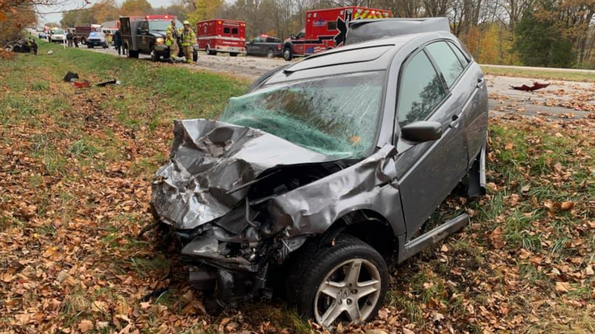

Plain and simple, it would cut down on the amount of fatal vehicle crashes. The rate of fatal crashes per km driven is about half as high for 18 and 19 year olds compared to 16 and 17 year olds according to safewise.org. Refer to the statistics page to see the numbers.
Another reason is that it will make teens more active. Removing the option to drive will cause the teenagers to walk, ride bikes, or other active options which gives the teens more excercise.
My last point is about emotional maturity. The age of 16 is a very confusing and troubling time for both male and female teens, and adding driving into that equation will most likely make teens make bad decisions, whereas 18 year olds are more emotionally mature.